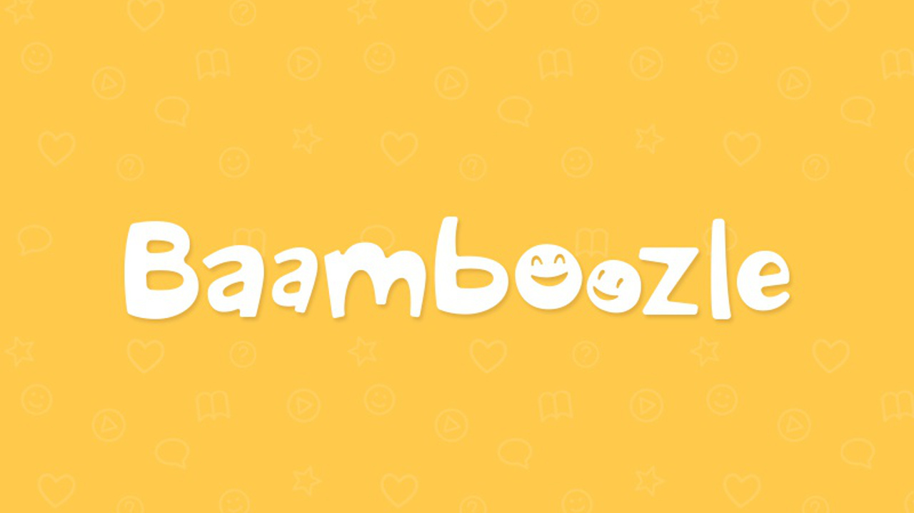
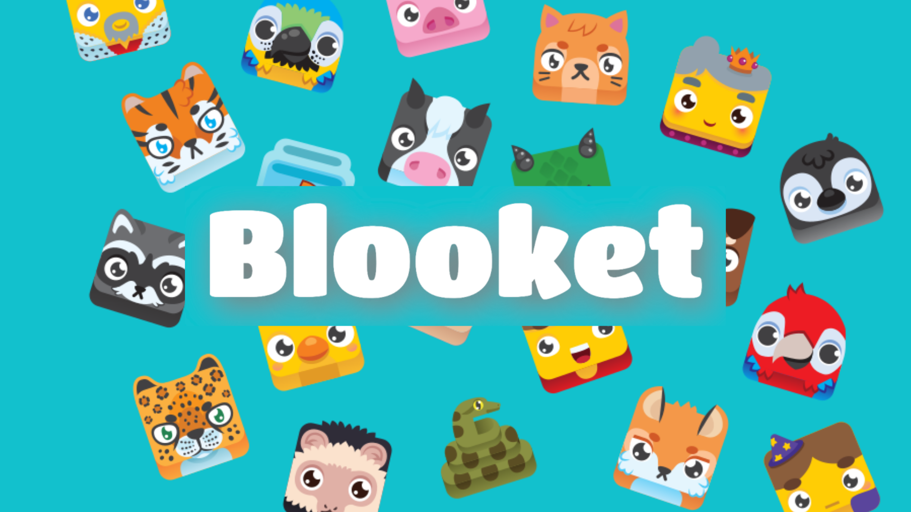

BAMBOOZLE
O site Baamboozle é uma plataforma de aprendizado online que oferece uma ampla variedade de jogos educacionais interativos. Esses jogos são projetados para ajudar professores e alunos a tornar o processo de aprendizado mais envolvente e divertido. Os jogos do Baamboozle podem abranger uma variedade de tópicos e disciplinas, e eles são frequentemente usados em sala de aula para revisar conceitos, testar o conhecimento e promover a participação dos alunos.

KAHOOT!
O Kahoot! é uma plataforma de aprendizado interativo amplamente usada por educadores e alunos para criar e compartilhar jogos educacionais. Os jogos são interativos e promovem a participação dos alunos, enquanto os professores avaliam o conhecimento em diversos tópicos. Além disso, a plataforma possui uma comunidade online para compartilhar jogos criados por outros usuários, enriquecendo os recursos educacionais.

BLOOKET
O site Blooket é uma plataforma educacional que permite aos professores criar e compartilhar jogos interativos para sala de aula. Os jogos no Blooket são projetados para tornar o aprendizado mais envolvente e divertido, permitindo que os alunos participem de atividades de perguntas e respostas em tempo real.